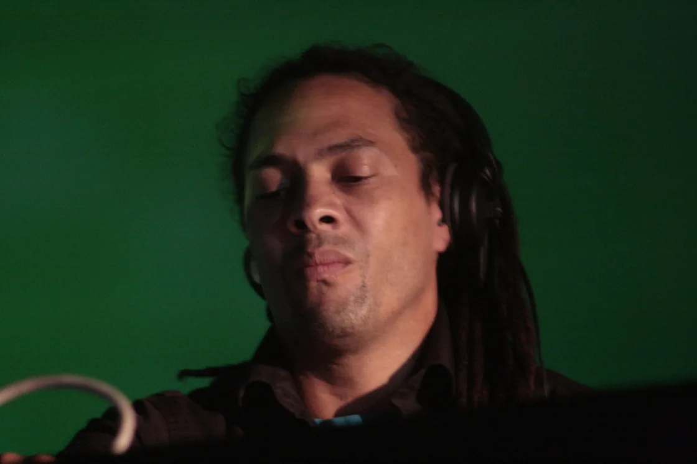
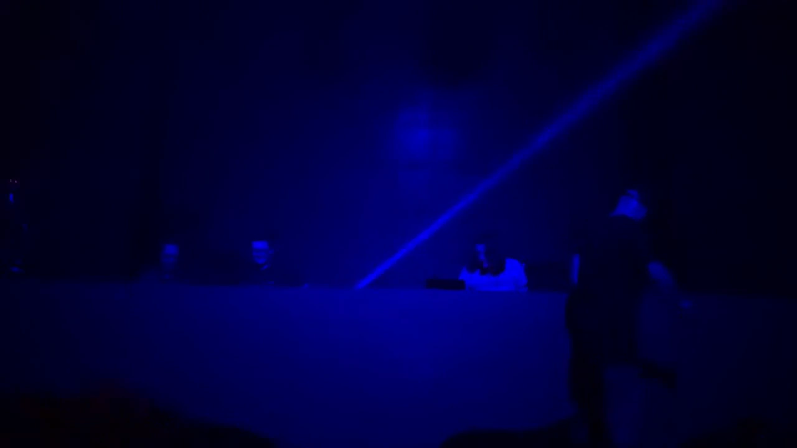
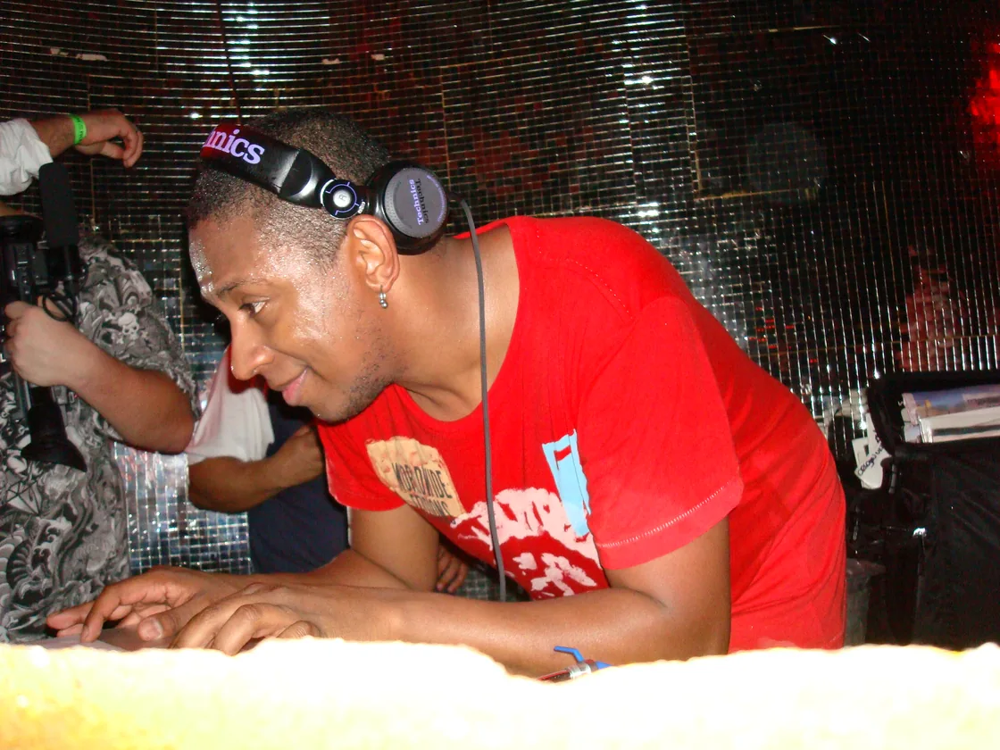

Drum and bass guide
What is drum and bass?
How jungle became a genre: 174 BPM, chopped breaks and sub-bass, a technical school, a set of institutions and, within a decade, festivals on five continents.
The music jungle turned into.
Drum and bass is the music jungle turned into. Same city, same tempo range, same drum vocabulary, but by the second half of the 1990s a large part of the scene had stopped calling itself jungle and started building something with a technical school, a set of institutions and, eventually, festivals on five continents.
This guide covers where that turn happened, how the music is put together, the branches it grew, and how a sound made in Britain ended up being made everywhere.
1994 to 1995
Where jungle ended.
There is no clean date for the split, and any account that gives you one is tidying up. Through 1994 and 1995 the change happened gradually and unevenly, and it was as much about the name as the music.
By 1994 jungle had reached the UK charts and daytime radio, and the version of it that reached them was ragga jungle: Jamaican vocal samples, reggae basslines, MC energy. Some producers did not want their records filed under that, partly on sound and partly because the word jungle now carried associations, about class, about race, about violence at certain raves, that had little to do with what they were making. The term drum and bass gave them a way out. Goldie founded Metalheadz in 1994 with Kemistry and Storm, and the label described its aim as reworking breakbeat and jungle "into a new dimension, drum 'n' bass". His album Timeless, released in August 1995, made that ambition legible to people who had never been to a rave.
The argument about what was gained and lost in that rename, who got left behind, and what General Levy did or did not say, is the jungle scene's own story, and the jungle guide tells it as an epilogue. For drum and bass it is the opposite: the starting point. Everything after this section assumes the split already happened.
How drum and bass is built: 174 BPM, the break and the low end.
The tempo is the first fact. Drum and bass sits between 160 and 180 beats per minute and has settled, since about 1996, on 174 as a de facto standard. That is fast, and it is why the drums matter so much: at that speed a producer cannot lean on a four-to-the-floor kick, so the rhythm is carried by a breakbeat, a sampled and rearranged drum passage from a funk or soul record. The break most associated with the genre is the Amen, six seconds of drums from a 1969 B-side, timestretched and cut apart into new patterns. That editing technique, and the copyright story around the break, is the subject of the breakbeat guide; the way jungle producers first weaponised it at speed is covered in the jungle guide.
Two drum feels dominate. The two-step is spare, a kick and a snare with air around them, laid out so the track glides rather than tumbles; Alex Reece's "Pulp Fiction", from 1995, is the record usually pointed at as the template. The rolling break is denser, more of the original break left intact, pushing forward under the bass, and a heavy example from the same year is Dillinja's "The Angels Fell". Underneath either feel sits the bass, and drum and bass treats bass as a lead instrument rather than a support. Often it is a sustained sub, felt more than heard on a small speaker. Often it is a Reese, a detuned, moving growl named after a late-1980s Kevin Saunderson bassline, which later producers sculpted into the genre's most recognisable sound.
This is also the clearest way to place drum and bass next to dubstep. Both are bass-led British music, but drum and bass runs at full tempo with a busy break, while dubstep sits at around 140 with the kick and snare spread so far apart that the track feels half as fast. Same lineage, opposite solutions to the same question about weight and space. The dubstep guide covers the other side of that split.
Metalheadz and the dark turn.
By 1995 drum and bass had a home for its most forward material: the Metalheadz Sunday session at the Blue Note in Hoxton Square, a small room where the label's roster tested records on a system in front of a crowd that did not applaud politely. Timeless had given the genre a broadsheet profile. What happened next inside the clubs went the other way.
The Sunday Sessions ran for roughly three years, until the Blue Note closed in 1998, and they worked the way jungle's pirate-and-dubplate economy had: a producer cut a new track to acetate, played it once into that room, and watched what it did. It was scarcity as a physical property of vinyl, the same practice moved into a genre with A&R and press. The people who carried the dubplate culture from jungle into this are the jungle guide's territory.
The harder direction is usually traced to No U-Turn, Nico Sykes' studio and label in north London, and to a group of producers around it: Ed Rush, Trace, Nico, Fierce. Their records replaced the jazz and the atmospherics with distortion, compression and a machine-shop rhythm, and the compilation Torque, in 1997, collected the results. The name that stuck to it, techstep, is usually credited to that circle and spread through Grooverider's Radio 1 sets; who first used it in print is not settled. Doc Scott's "Shadow Boxing", released under his Nasty Habits alias on his own 31 Records in 1996, is the record most people reach for when they want to show what the dark side sounded like. In 1998 Ed Rush and Optical founded Virus Recordings and released the album Wormhole, which took the techstep template and made it funkier and more precisely edited, and pointed at what would be called neurofunk.
The atmospheric line: Speed, Bristol and Good Looking.
The dark turn was one answer to 1995. Another ran through a club night called Speed, at the Mars Bar in central London, where Fabio and LTJ Bukem played the jazz-facing, melodic end of the music to a room that wanted to listen rather than rush. Bukem's label Good Looking and its Logical Progression compilation series, the first in 1996, gave that sound a catalogue. His 1993 track "Music" is the usual reference: strings, a soft break, no drop in the modern sense. For a few years this branch was marketed as "intelligent drum and bass", a label that made a real distinction at the time and has aged into an embarrassment, since it implied the rest of the genre was not.
The other centre of the melodic version was not in London at all. In Bristol, Roni Size, Krust, Die and Suv formed the collective Reprazent, and Bristol labels, Full Cycle and the V Recordings axis run by Bryan Gee and Jumpin Jack Frost, built a rolling, jazz-inflected sound with a live-band feel. In 1997 Reprazent's New Forms won the Mercury Prize, beating OK Computer, and for a moment the sound of British music writing about itself was a drum and bass record made in Bristol. "Brown Paper Bag", from that album, is the track that reached people who owned no other record in the genre.

By 2000 the melodic branch had a name of its own, liquid, after a Fabio mix CD called Liquid Funk, and it became the genre's most exportable form: soulful, vocal, built on rolling two-step, carried by Calibre, High Contrast, Marcus Intalex and, later, the Hospital Records roster. Grooverider and Fabio took the whole spread of it onto national radio, holding a Radio 1 drum and bass show from 1998 that ran for two decades.
The subgenres and what they mean.
Drum and bass argues about terminology as much as jungle does, and most of the arguments are about where one branch ends and the next begins. The table sets out the main terms, roughly when each one appeared and how it relates to the core sound.

None of these are sealed boxes. A liquid producer will make a jump-up record; a neurofunk engineer will cut something almost ambient. The labels describe tendencies and scenes more than they describe rules.
| Term | Roughly when | What it means | Relationship to the core |
|---|---|---|---|
| Drum and bass (the core) | 1994 onward | Around 174 BPM, breakbeats, sub-bass as a lead voice | The source: the form jungle became |
| Liquid, or liquid funk | 2000 onward | Melodic and soulful, rolling two-step, vocals and chords | The mellow line, named after Fabio’s 2000 mix CD |
| Jump-up | Mid-1990s onward | Big cartoonish basslines, simple breaks, built for the party | Split early from breakbeat science; DJ Zinc, Aphrodite |
| Techstep | 1996 to 1999 | Machine-led, industrial, sci-fi; distortion and compression | The hard turn away from jazz; No U-Turn and Torque |
| Neurofunk | Late 1990s onward | Techstep with funk precision and mid-range design, not sub-bass | Descends from techstep; Ed Rush and Optical, then Noisia |
| Darkstep and drumfunk | Late 1990s onward | Very fast dark drums; dense hand-edited breaks | Wings of the same tree; drumfunk is the Photek and Paradox lineage |
| Halftime | 2010s onward | Drum and bass sound design at a half-time drum feel | The point where its tempo logic meets dubstep’s |
2000s onward
How drum and bass stopped being British.
Drum and bass was a London and Bristol music that, within a decade, was being made in places with no connection to either. Brazil built the first major scene outside Britain: DJ Marky, XRS and Patife, connected to the UK through Bryan Gee's V Recordings, and Marky's crossover with "LK", made with XRS and the MC Stamina in 2002, put a Brazilian record in every British club that year. Continental Europe followed, and by the 2010s the largest events were not in Britain at all: Rampage in Antwerp indoors, Let It Roll in the Czech Republic outdoors, each billed as the biggest of its kind. Toronto is usually named as the strongest early North American scene.
The music also kept moving between the deep side and the loud side without ever fully resolving. The Bristol and liquid lineages carried the melodic version; jump-up held the dancefloor; neurofunk went to the Netherlands with Noisia and Black Sun Empire and became a global technical benchmark.

Since 2021 there has been a resurgence, and this time the numbers are attached to it: Spotify reported drum and bass streams up around 94 per cent between 2021 and 2024, with most of those listeners under 34, and Pitchfork wrote in 2021 about a rising zoomer affinity for the genre. Nia Archives is the name most attached to the revival; her 2024 album Silence Is Loud reached number 16 on the UK albums chart, and it does the thing the whole guide keeps circling back to, folding jungle's breakbeats and reggae feel back into a drum and bass record. The jungle guide covers that revival from the other end.
Where drum and bass is now.
Drum and bass is no longer a scene that has to be defended or explained. It has a festival circuit, a streaming audience that skews young, a technical school that produces engineers as much as artists, and a back catalogue deep enough that a new listener can spend a year inside 1995 alone. The split with jungle that started this story has, in practice, closed: the artists driving the current wave treat jungle and drum and bass as one toolkit, which is roughly where the two words started.
Drum and bass FAQ.
What does DnB stand for?
DnB stands for drum and bass, also written d&b, drum & bass or drum'n'bass. It is a UK electronic genre that runs at around 174 beats per minute. The same three letters are used for unrelated things, including a Norwegian bank and the business-data firm Dun & Bradstreet, but in a music context DnB always means drum and bass.
What BPM is drum and bass?
Usually between 170 and 180, and most often 174. Because the kick and snare are spread across the bar, the track can also be felt at half that speed, around 87, which is what makes half-time drum and bass and some dubstep sit close together.
Is drum and bass the same as jungle?
The difference is one of scene and era more than sound. Jungle is the breakbeat-and-reggae scene of roughly 1991 to 1995; drum and bass is the wider genre that most of that scene turned into after distancing itself from the ragga sound and the name. They share a tempo, a drum vocabulary and a lineage, and many current artists treat the two as one thing again.
Is drum and bass EDM?
Not in the way the term is normally used. Drum and bass predates the American "EDM" marketing category by about fifteen years and developed on its own in Britain. The two now share festival bills, but drum and bass came from rave and jungle, not from the US festival-house lineage.
What are the main drum and bass subgenres?
The most common branches are liquid, jump-up, neurofunk and techstep, with darkstep, drumfunk and halftime as narrower terms. Liquid is the melodic, soulful side; jump-up is the big-bassline party side; techstep and neurofunk are the harder, machine-led side.
Sources.
Continue reading
Read next.
 A01Guide / Breakbeat / ~22 min
A01Guide / Breakbeat / ~22 minBreakbeat Music: History, Sound and Evolution
From funk breaks and pirate radio to cracked VSTs and modern bass hybrids.
Read article → A02Guide / Jungle / ~18 min
A02Guide / Jungle / ~18 minJungle Music: From Roots to Revival
Pirate radio, dubplates, MC energy and the global return of a distinctly Black British sound.
Read article → A03Timeline / UK music / ~27 min
A03Timeline / UK music / ~27 minThe Evolution of UK Electronic Music
Ten sounds that travelled from regional underground scenes into global culture.
Read article → A04Guide / Bass music / ~20 min
A04Guide / Bass music / ~20 minWhat Is Bass Music? History, Genres and Essential Tracks
A global history connecting Jamaica, Miami, Britain, Los Angeles, Chicago, Durban and today’s hybrid club culture.
Read article → A05Guide / Dubstep / ~12 min
A05Guide / Dubstep / ~12 minWhat Is Dubstep? Origins, Sound and the Genre Split
From south London record shops and 200-capacity basements to a genre that split into two sounds sharing one name.
Read article →